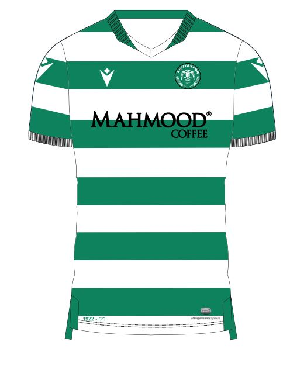

1922 yılında Konya'da Konya Gençlerbirliği adıyla kurulmuştur. Konya Ligi şampiyonu olarak Türk futbol
tarihindeki ilk ülke şampiyonası olan 1924 Türkiye Futbol Şampiyonası'na katılmıştır. 1965 yılında
profesyonel liglerde Konya şehrini tek takımın temsil edeceği yönünde federasyondan gelen talimat
doğrultusunda Konya Gençlerbirliği; Meramspor, Selçukspor ve Çimentospor ile birleşerek "Konyaspor" adını
almış ve 1. Lig'de profesyonel olarak mücadeleye başlamıştır. Kulüp 1981 yılına kadar siyah-beyaz renklerde
mücadele ederken, 1980-81 sezonu sonunda rakibi Konya İdman Yurdu'yla birleşmiş ve renkleri de rakibinin
renkleri olan yesil - beyaz olarak belirlenmiştir.
Konyaspor takımının renkleri birleştiği rakibi Konya İdman Yurdu'nun renkleri olan yeşil-beyaz'dır. Anadolu
Selçuklu Devleti'ne başkentlik yapan Konya'nın bu takımının sembolü, Anadolu Selçuklu Devleti'nin de simgesi
olan çift başlı kartaldır. Logoda bulunan çift başlı kartalın altında, tarımın simgesi olan buğday başakları
da ilin tahıl tarımında önde gelen illerden biri olduğunu göstermektedir.

KONYASPOR futbol takımı oyuncuları
Ahmed Hasan Mahcub
Abdülkerim Bardakcı
Amilton
Sokol Çikalleshi
Zymer Bytyqi
Soner Dikmen
Konrad Michalak
Amir Hadžiahmetović
Amar Rahmanović
Uğurcan Yazğılı
Guilherme
Endri Çekiçi
Ibrahim Šehić
Eray Birniçan
Stadyum
Konyaspor'un 2014 yılına kadar maçlarını oynadığı Konya Atatürk Stadyumu 1950 yılında yapılmıştır. 2005
yılında yenilenmiştir. Bu stadyumun kapasitesi 22.456 kişidir.
2012 yılında spor bakanı Suat Kılıç yeni stad projesini medyaya sundu. Konyaspor maçlarını 2014-15
sezonu itibarıyla yeni yapılan Konya Büyükşehir Belediye Stadyumu'nda oynamaya başlamıştır. Stadyum
kapasitesi 42,000 kişilik olup UEFA standartlarına göre inşa edilmiştir.
Takımın dört taraftar grubu vardır. Bunlar Nalçacılılar, Green-White, Şehri Müdafaa ve Nalçacı Gençlik'tir.